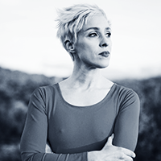
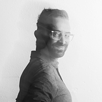
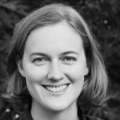
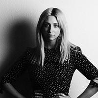

Katherine Helen Fisher — Founder
Katherine Helen Fisher is a director, choreographer, and curator working across performance, film, installation, and computational media. Her work moves between live performance and cinematic image-making, exploring embodiment, desire, memory, and agency through both choreographic and technological forms. Much of her film work has been shaped by the high desert, whose scale, stillness, and visual language continue to inform her artistic life. Grounded in a performance lineage that includes Lucinda Childs Dance Company, the Merce Cunningham Trust, and Einstein on the Beach, she brings that background into her work across mediums. She founded The Desert Door as a space where artists can step away from pressure, reconnect with themselves, and return to their practice with renewed clarity and care.

Shimmy Boyle — Founder
Shimmy Boyle is an artist, technologist, and creative producer working across film, interactive media, and emerging technology. His practice combines technical innovation with a strong sensitivity to atmosphere, experience, and form, often building systems that support new ways of seeing, making, and connecting. As a founder of The Desert Door, he has helped shape the residency as a space for restoration, experimentation, and possibility. His care for the house, the land, and the long-term sustainability of the program has been central to bringing the residency into being.

Dr. Caroline Adams — Founding Supporter
Dr. Caroline Chase Adams, MD, is a family medicine physician based in the Portland area, specifically practicing in Gresham, Oregon. She is recognized for her focus on comprehensive primary care and has held leadership roles in community health. She is the founding supporter of The Desert Door Rest + Resilience Residency. Her generosity and belief in the importance of artist-centered space have made the launch of the residency possible. We are deeply grateful for her support in helping create a place where artists can step away from daily demands and reconnect with rest, reflection, and creative life.

Caroline Haydon — Co-Curator
Caroline Haydon is an Emmy-nominated producer, curator, and multimedia artist based in Los Angeles whose work engages movement, sound, video, and emergent technology. With a background in Butoh and digitally driven performance, she explores the intersection of dance and interactive media through work that attends to both intimate human experience and broader collective existence. As a producer and curator, she has created exhibitions and events across public art, immersive installation, and performance, with a focus on amplifying underrepresented voices and supporting artists who are reimagining the relationship between art, technology, and public space. Her presence at The Desert Door brings deep care, curatorial insight, and an artist-centered sensibility to the shaping of the residency.